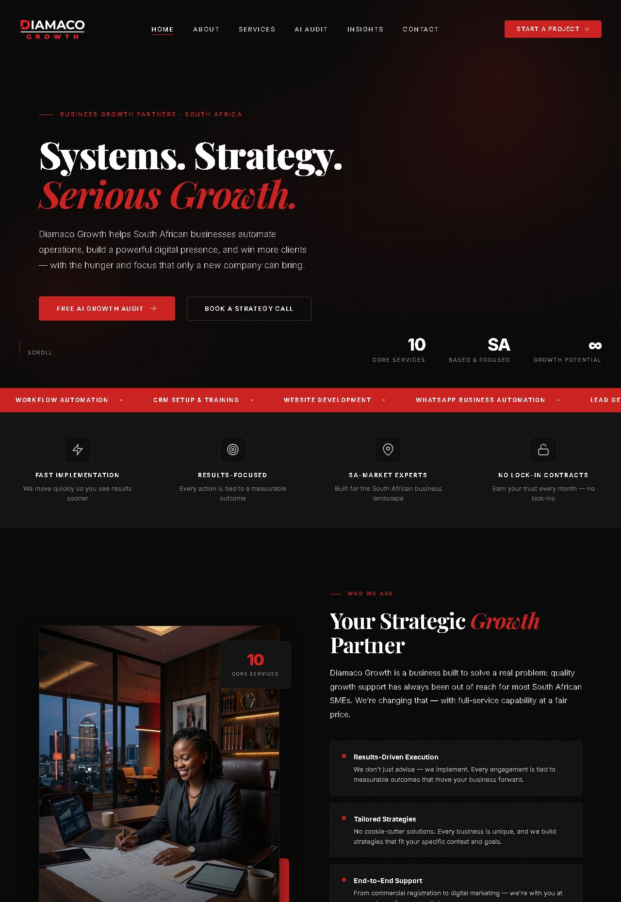
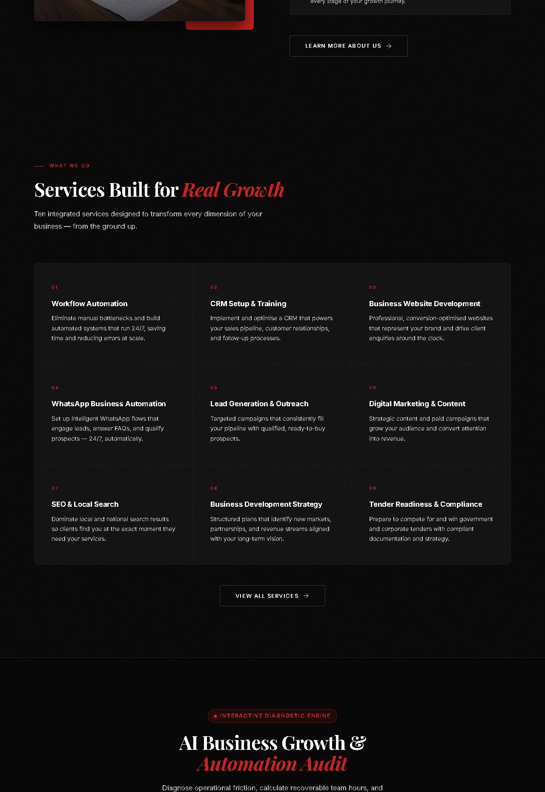
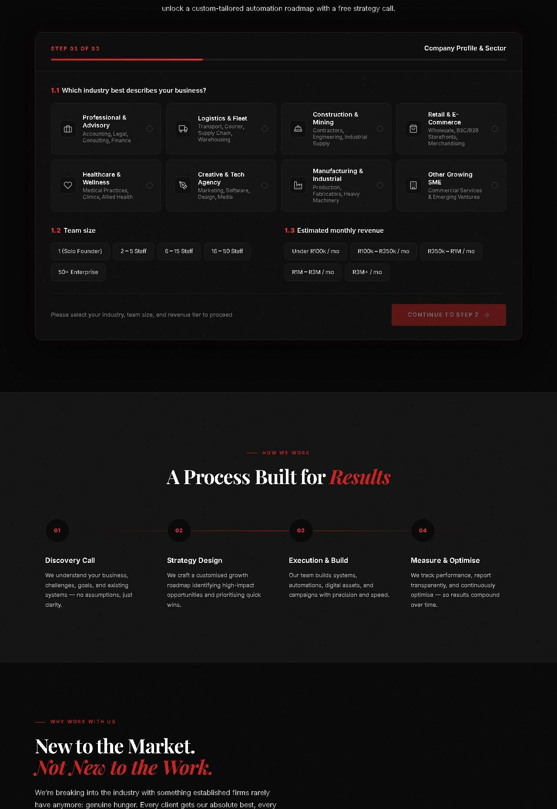
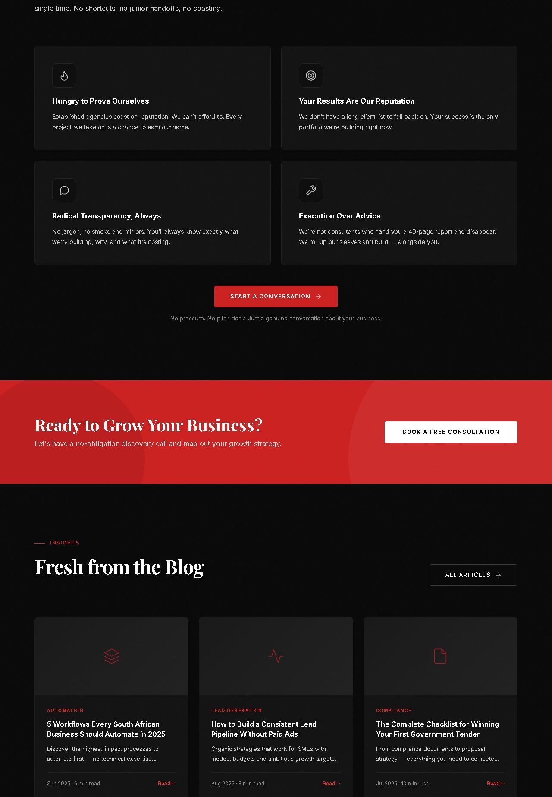
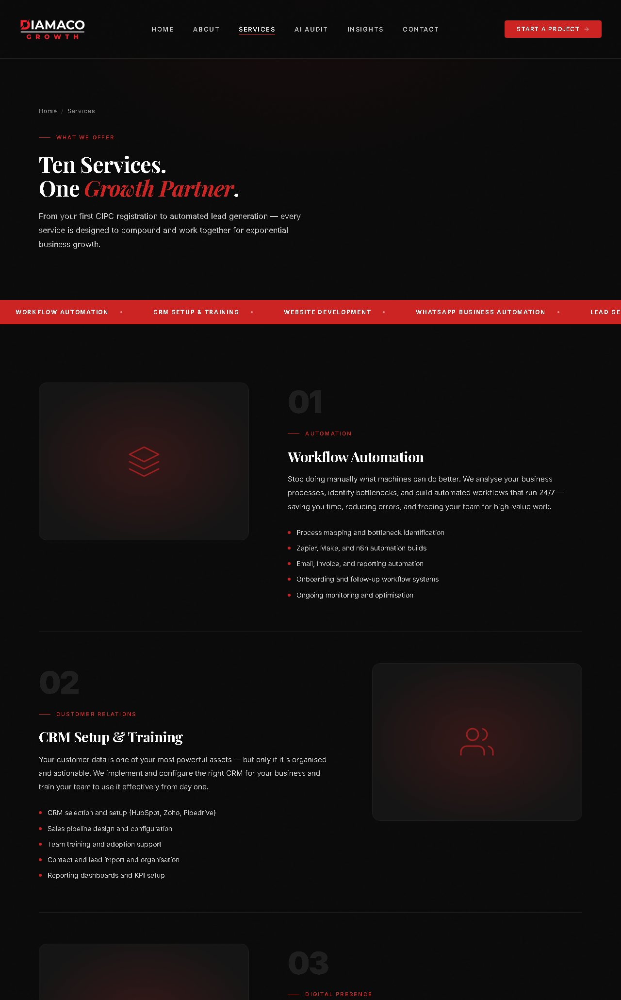
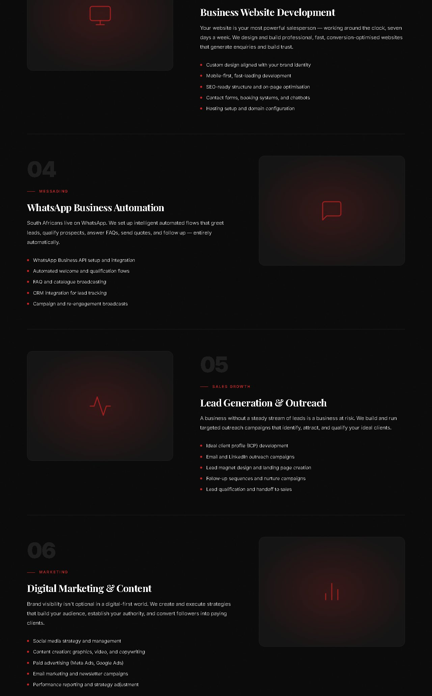
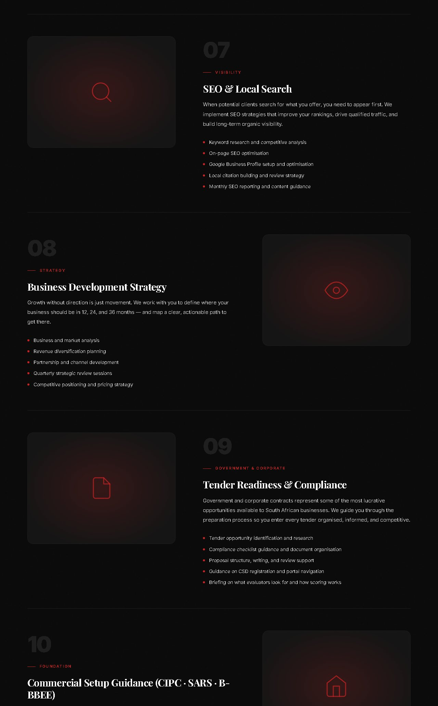
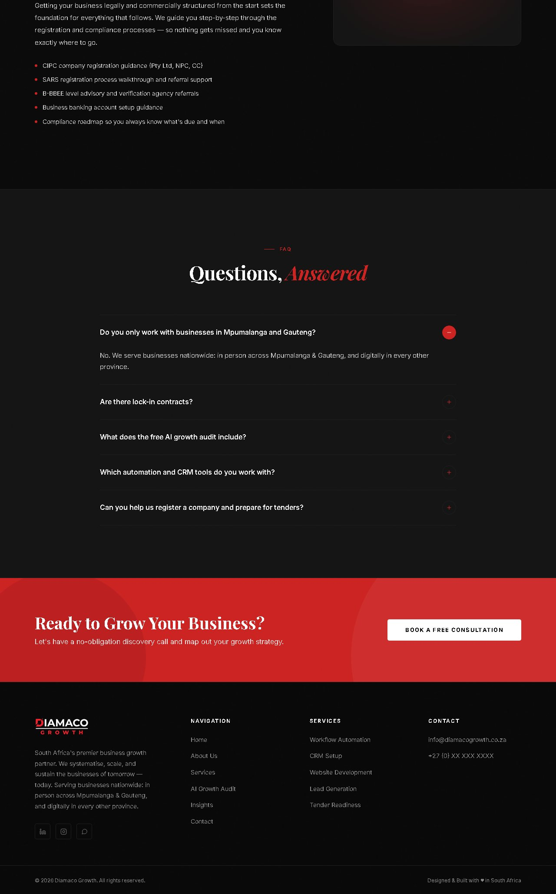
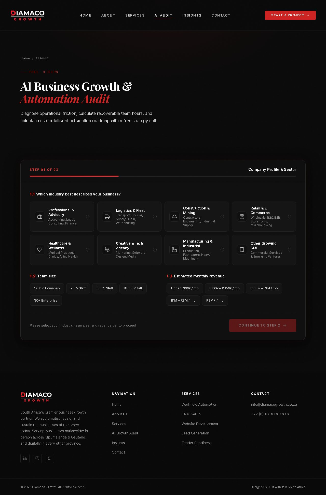
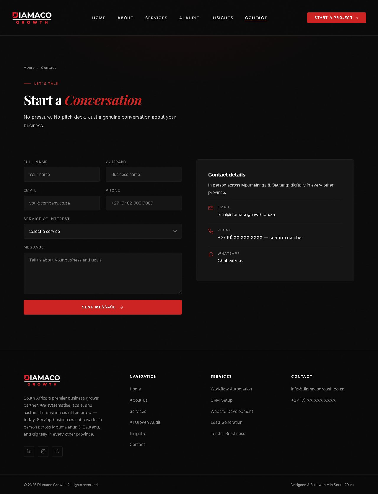

Brand
Logo, Mark & Voice
White DIAMACO, red slashed D, a white rule and tracked red GROWTH. Now a clean vector master, with one-colour versions and a stand-alone D-mark.
Logo


Voice & imagery
Colour
Black, and Signal Red
One dark theme. Red is a signal, not a field: buttons, labels, numbers, active states — and one full-red call-to-action band.
Typography
Playfair & Inter
A heavy serif headline whose last beat turns red and italic, framed by tiny, widely tracked Inter caps.
Layout & effects
Space, Depth & Motion
A 1200px column, generous 120px sections, tight corners, black shadows for lift and red light for emphasis.
Iconography
45 Line Icons
Thin strokes that take their colour from the text around them. They replace the emoji the site used, so the only colour stays red.
Emoji → icon
Components
The Building Blocks
Live React components, shown exactly as they render. Hover and click them on screen.
Sections
Navigation
Elements
Website kit
The Site, Rebuilt
A click-through recreation of diamacogrowth.co.za built only from the components above — a design reference, not the live site.










Social & blog
Ready-to-Post Graphics
Templates at platform sizes, in the same system: share image, blog covers, feed posts and a story. Every word comes from the site.
Share image & blog covers · 1200 × 630
Feed posts & story